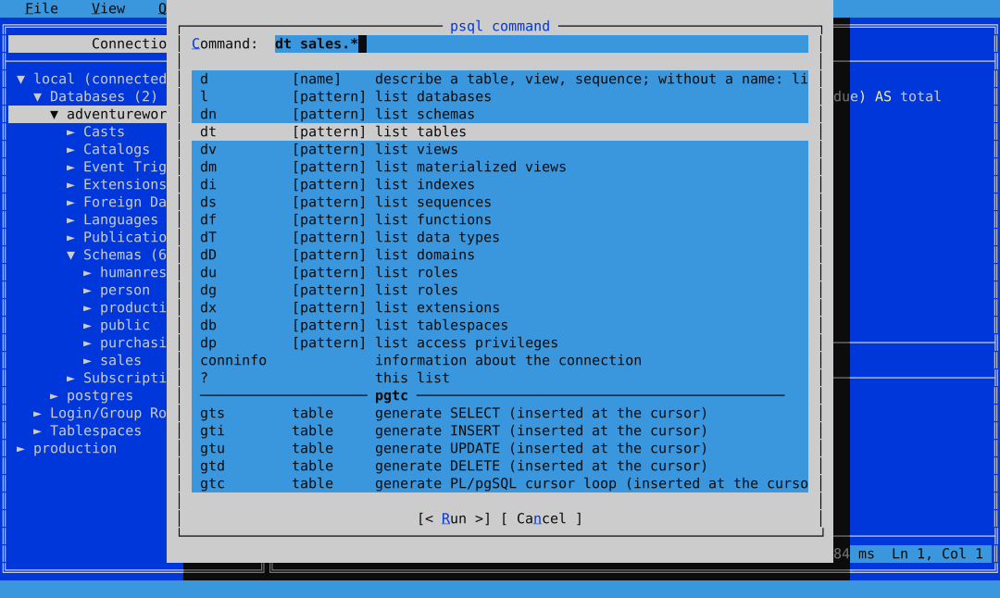
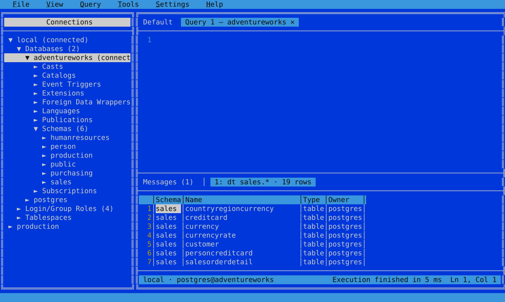
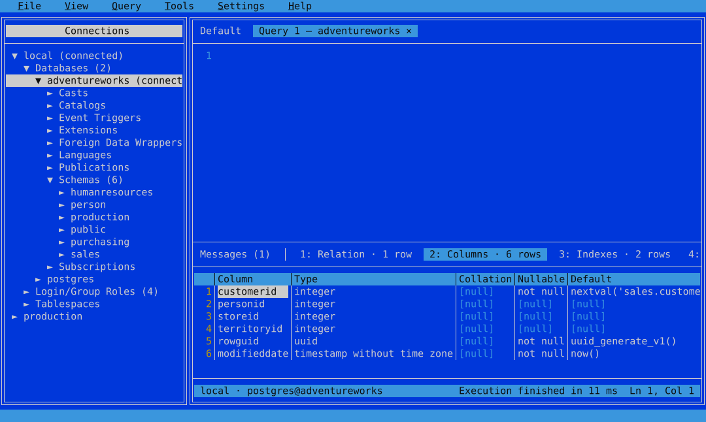
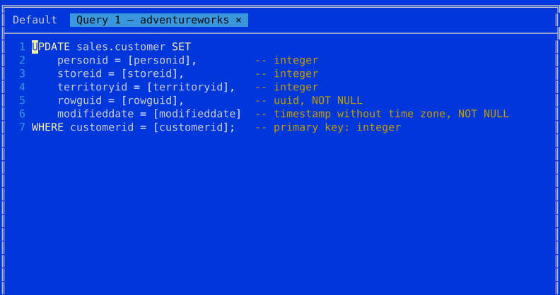
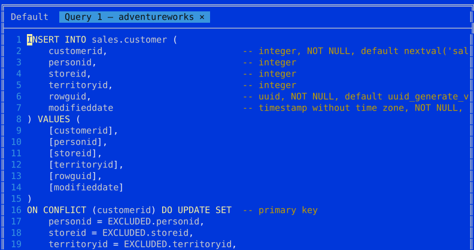

psql-style and generate commands (F4)
A command line in the query tab. It takes psql's meta-commands for listing and describing catalog
objects (\d, \dt, \df, …) and pgtc's own generate commands, which read
the columns and constraints of a relation from the system catalogs and write DML, PL/pgSQL or DDL for it into the
editor. Every catalog read goes through the tab's own session.
The command line

- In a connected query tab, press F4 (Esc 4, or ). It works from the editor and from the results. The session must be idle: F4 is not available while a statement executes or an export runs.
- Type a command, for example
dt sales.*. - Press Enter (Run).
The commands are psql's meta-commands without the backslash: psql's \dt sales.* is
dt sales.*. A leading backslash is accepted and ignored. The queries behind them are pgtc's own, not
psql's, so the columns of a result can differ from psql's output.
The list under the input
The list shows every command with its argument and description; pgtc's generate commands follow a separator line.
- Up / Down / PgUp / PgDn move in the list — also while the cursor is in the input — and the mouse wheel scrolls it.
- Selecting a row puts its command into the input, followed by a space when it takes an argument.
- Typing a command moves the list to it. The list is never filtered.
- Enter with an empty input runs the selected command.
- Esc closes the window.
Completing names
In the input, Ctrl+Space or Alt+/ completes the argument — the name after the command.
Each command offers its own relation kinds: tables for dt, views for dv, materialized views
for dm, sequences for ds (combined letters add up); tables, views, materialized views,
foreign tables and sequences for d and dp; the kinds in the Works on column for the
generate commands; schemas for gp and gf. The commands whose argument has no schema part
(l, dn, du, dx, db) offer nothing.
- Wherever a name can be schema-qualified, the list starts with the schemas, before the relations.
Enter on a schema inserts it with its dot (
sales.) and the list goes on with the relations of that schema.dt sales.is a complete pattern by itself: all tables ofsales. di,df,dTanddDoffer the schemas only: the name cache holds no index, type or domain names for them.- A relation that is visible on the
search_pathis offered unqualified (orders), any other schema-qualified (sales.customer). Once the argument contains a dot, every entry is qualified:sales.cnarrows the list to that schema. Matching is case-insensitive, on the start of the name. - Enter replaces the argument with the entry, quoted where the identifier needs it
(
sales."Order Items"). It does not run the command. Esc closes only the list. - The names come from the tab's name cache, the one the editor's autocomplete uses. Missing names are not read while a result runs or is paused.
There is no history of commands.
List commands
| Command | Lists |
|---|---|
l | Databases |
dn | Schemas |
dt | Tables, partitioned tables included (relkind r, p) |
dv | Views |
dm | Materialized views |
di | Indexes, partitioned indexes included, with the table each belongs to |
ds | Sequences |
df | Routines in pg_proc: functions, procedures, aggregates and window functions, with result and argument types |
dT | Data types, without array types and the row types of relations |
dD | Domains, with base type, default and CHECK constraints |
du, dg | Roles, with their attributes and memberships |
dx | Installed extensions |
db | Tablespaces |
dp | Access privileges (ACLs) of tables, views, materialized views, sequences and foreign tables, with column privileges |
d (without a name) | Tables, views, materialized views, sequences and foreign tables together |
Command names are case-sensitive, as in psql: dt lists tables, dT lists types.

dt sales.*: the tables of schema sales. The result set is labelled with the
command.A command is a run of the tab, like F5: a result set you can navigate, copy from and export, a line in Messages, the elapsed time. The editor text is not touched.
- pgtc sends a catalog query (
pg_class,pg_namespace,pg_proc,pg_roles, …) as a prepared statement over the tab's session. Patterns travel as bind parameters, never as SQL text. - The query runs in the session's current transaction state: inside an open transaction it is part of it, and in an aborted transaction the server rejects it like any other statement.
- An error of such a query has no position in the editor, so there is no line to jump to.
Combining, system objects, more columns
| Write | Meaning | Example |
|---|---|---|
Several letters after d | The relation kinds t v m i s (and E for foreign tables) combine. | dtv — tables and views |
S | Include system objects. Without a pattern and without S, a list leaves out the schemas pg_* and information_schema (du: the roles pg_*). With a pattern, system schemas are always searched. The TOAST schemas never appear in a relation list. | dtS, dfS pg_get* |
+ | More columns: size (pg_table_size, pg_database_size), description, owner, ACL, … depending on the command. | dt+, l+ |
Patterns
Every list command takes an optional pattern. The syntax is psql's; each part becomes an anchored regular
expression that the server matches with ~ against the schema name and the object name.
| Pattern | Matches |
|---|---|
customer | The name customer, in any schema. |
sales* | Names that start with sales. * matches any sequence of characters. |
*territory* | Names that contain territory. |
sales?erson | ? matches exactly one character. |
sales.* | Everything in schema sales. |
*.customer | customer in any schema. |
s*.sales* | Both parts can have wildcards. |
"Order Items" | Double-quoted: matched exactly, case preserved, * ? . literal. Unquoted text is folded to lower case, as identifiers are. |
- As in psql, a pattern without a schema part — and a list without a pattern — shows only objects that are
visible on the session's
search_path(pg_table_is_visible(),pg_function_is_visible(),pg_type_is_visible()): an object in a schema that is not on the path, or one hidden by a same-named object earlier on the path, is not listed. Give a schema part (sales.*,*.*) to look outside the path. - Other regular-expression characters in a pattern are escaped; only
*and?are wildcards. - The commands for cluster-wide objects and schemas (
l,dn,du,dx,db) take a name pattern only; a dot is part of the name there. For the other commands, the database part of a three-part pattern (db.schema.name) is ignored.
dt tables visible on the search_path
dt sales.* all tables of schema sales
dtv+ *order* tables and views with "order" in the name, with sizes
df *price* functions with "price" in the name
dn schemas
du roles
dp sales.customer the ACL of sales.customerDescribing one object: d name

d sales.customer: four result sets. Columns is shown; Ctrl+PgDn goes to
Indexes and Constraints.d with a name describes one relation: a table (plain or partitioned), view, materialized view,
sequence or foreign table. The answer is one result set per section, each from its own catalog query:
| Result set | Columns |
|---|---|
| Relation | Schema, name, type (from relkind), owner, description. |
| Columns | From pg_attribute: column, type (format_type), collation when it is not the type's default, nullable (not null), default — the default expression, or generated always / by default as identity. With d+ also storage (plain, main, external, extended) and description. |
| Indexes | Name, kind (primary key, unique, or empty), definition (pg_get_indexdef). |
| Constraints | Name, type (primary key, unique, foreign key, check, exclusion, trigger), definition (pg_get_constraintdef). |
| Triggers | Name and definition (pg_get_triggerdef) of the user triggers; internal triggers are not listed. |
| Definition | For a view or materialized view: its query (pg_get_viewdef). |
- A section without rows — a table without triggers — is left out.
- Switch between the sections with Ctrl+PgDn / Ctrl+PgUp, or in the results with Alt+Right / Alt+Left.
- Name resolution: a schema-qualified name is looked up in that schema. An unqualified name must be
visible on the session's
search_path(pg_table_is_visible). Unquoted names are folded to lower case;"Order Items"is taken as written. The name is a bind parameter. If nothing matches, Messages says Did not find any relation named "…". ddescribes one relation: an argument with*or?is refused, with the hint to usedt,dv, ….
For the complete CREATE TABLE statement, select the table in the tree instead — see
Object view. d shows the columns without leaving the query tab.
conninfo and ?
| Command | What it does |
|---|---|
conninfo | Writes the tab's connection into Messages: You are connected to database "adventureworks" as user "postgres" on host "localhost" at port "5432" (SSL mode prefer). and the server's major version. Nothing is sent to the server: the values are the tab's database and the parameters of the saved connection. SSL mode is the configured sslmode, not a statement about whether the session is encrypted. |
? | Lists all commands as a result set (columns Group, Command, Description) — the list of the window in a form you can copy or export. |
What is not there
These psql meta-commands have no counterpart: \c (a query tab is bound to one database — open another
tab), \i and \o (use Open SQL file and
Export result), \copy, \x, \h, \set,
\password, \g, \watch, \if. Meta-commands are recognised only in the
F4 input: a line starting with \ in a script is sent to the server as it is and fails with a
syntax error.
Generate commands: SQL for a table
The commands below the separator are pgtc's own. Each one reads the relation's columns from
pg_attribute (type, NOT NULL, default, identity, generated) and its primary-key and unique
constraints from pg_constraint, then inserts a statement at the editor cursor. Nothing is
executed. Some commands also read the foreign keys (gtg, gtj, gtr,
gtv).
| Command | Writes | Works on |
|---|---|---|
gts table | SELECT with every column | tables, views, foreign tables |
gti table | INSERT | tables, views, foreign tables |
gtu table | UPDATE … WHERE key | tables, views, foreign tables |
gtd table | DELETE … WHERE key | tables, views, foreign tables |
gto table | Upsert: INSERT … ON CONFLICT … DO UPDATE | tables, views, foreign tables |
gtm table | MERGE (PostgreSQL 15 and newer) | tables |
gtc table | PL/pgSQL: a cursor loop over the table | tables, views, foreign tables |
gtsi table | PL/pgSQL: variables and SELECT … INTO for one row | tables, views, foreign tables |
gtrb, gtra table | A trigger function and a row trigger, before / after | tables |
gtsb, gtsa table | A trigger function and a statement trigger, before / after | tables |
gtv table table … | CREATE VIEW joining the tables on their foreign keys | tables, views, foreign tables |
gtg table [rows] | Test data: INSERT … SELECT … FROM generate_series, 100 rows unless you give a number | tables |
gtj table | SELECT joined to every table its foreign keys point to | tables |
gtr table | The rows of other tables that reference a row of this one | tables |
gtau table | An audit table, a trigger function and a trigger that log every change | tables |
gp [schema] | An empty PL/pgSQL procedure (schema public when none is given) | — |
gpi table | PL/pgSQL procedure that inserts a row | tables |
gpu table | PL/pgSQL procedure that updates a row by its key | tables |
gpd table | PL/pgSQL procedure that deletes a row by its key | tables |
gpo table | PL/pgSQL procedure that upserts a row (ON CONFLICT) | tables |
gf [schema] | An empty PL/pgSQL function (schema public when none is given) | — |
gfr table | PL/pgSQL function: one row by its key | tables, views, foreign tables |
gfs table | PL/pgSQL function: RETURNS SETOF the table | tables, views, foreign tables |
gft table | PL/pgSQL function: RETURNS TABLE (…) with every column | tables, views, foreign tables |
gfe table | PL/pgSQL function: does a row with this key exist | tables, views, foreign tables |
gfj table | PL/pgSQL function: one row by its key as json (jsonb) | tables, views, foreign tables |
In the Works on column, tables means plain and partitioned tables (relkind
r, p). Materialized views and sequences are not accepted by any generate command.
The names are mnemonic: generate table + select, insert, update,
delete, on conflict, merge, cursor, select into, view,
generate data, join, referencing rows, audit; and for triggers
row / statement, before / after. generate procedure and
generate function work the same way: gpi, gpu, gpd,
gpo; gfr, gfs, gft, gfe, gfj.
(gp and gf take no table and read nothing from the server: they write an empty procedure
or function.)
How to use one
- Put the editor cursor where the statement should go.
- Press F4, type the command and the table —
gtu sales.customer— and press Enter. (Ctrl+Space completes the table name.) - The statement is in the editor. Replace every
[placeholder]with a value, delete the lines you do not need, and run it with F5.
- The table name:
customer,sales.customeror"Order Items", resolved as ford: an unqualified name must be visible on thesearch_path. The generated statement always schema-qualifies the table and quotes identifiers where needed. - Placeholders: every value you must supply is written as
[column]. That is deliberately not valid SQL: a statement with an unfilled placeholder fails to parse instead of running. - Comments: each column carries its type (as
format_typeprints it),NOT NULLand its default expression, so you see which lines can be dropped. - The key: where a statement must address one row, it uses the primary key. Without one, it uses
the first
UNIQUEconstraint (by name) whose columns are allNOT NULL; the comment names it. Unique indexes without a constraint are not considered. With neither, you getWHERE [condition] -- no primary key: write a condition. - If the name does not resolve to a table, view or foreign table: Did not find a table named "…", and nothing is inserted. A tables-only command on a view or foreign table is refused with a message.
- The catalog read uses the tab's session. While a result of the tab is paused (more rows available) or an export runs, the generate commands are refused — finish or close the result first.
All examples below are what pgtc writes for sales.customer: six columns, customerid is the
primary key and gets its value from a sequence.
gts — SELECT

gts sales.customer.SELECT
customerid,
personid,
storeid,
territoryid,
rowguid,
modifieddate
FROM sales.customer;Every column on its own line and no WHERE: delete the lines you do not want and add your condition.
gti — INSERT

gti sales.customer.INSERT INTO sales.customer (
personid, -- integer
storeid, -- integer
territoryid, -- integer
rowguid, -- uuid, NOT NULL, default uuid_generate_v1()
modifieddate -- timestamp without time zone, NOT NULL, default now()
) VALUES (
[personid],
[storeid],
[territoryid],
[rowguid],
[modifieddate]
);Left out are only the columns the server fills: generated columns, identity columns, and columns whose default
calls nextval() (serial) — here customerid. Columns with any other default are
listed with the default in the comment: delete rowguid and modifieddate (in both lists) to
get the defaults.
gtu — UPDATE, gtd — DELETE

gtu sales.customer.UPDATE sales.customer SET
personid = [personid], -- integer
storeid = [storeid], -- integer
territoryid = [territoryid], -- integer
rowguid = [rowguid], -- uuid, NOT NULL
modifieddate = [modifieddate] -- timestamp without time zone, NOT NULL
WHERE customerid = [customerid]; -- primary key: integer
DELETE FROM sales.customer
WHERE customerid = [customerid]; -- primary key: integerThe WHERE is on the key (several key columns are joined with AND). UPDATE sets
every other column except generated ones and GENERATED ALWAYS identity columns; keep the lines for the
columns you really change.
gto — upsert (INSERT … ON CONFLICT)

gto sales.customer (the statement continues below the screen)." loading="lazy">gto sales.customer (the statement continues below the screen).INSERT INTO sales.customer (
customerid, -- integer, NOT NULL, default nextval('sales.customer_customerid_seq'::regclass)
personid, -- integer
storeid, -- integer
territoryid, -- integer
rowguid, -- uuid, NOT NULL, default uuid_generate_v1()
modifieddate -- timestamp without time zone, NOT NULL, default now()
) VALUES (
[customerid],
[personid],
[storeid],
[territoryid],
[rowguid],
[modifieddate]
)
ON CONFLICT (customerid) DO UPDATE SET -- primary key
personid = EXCLUDED.personid,
storeid = EXCLUDED.storeid,
territoryid = EXCLUDED.territoryid,
rowguid = EXCLUDED.rowguid,
modifieddate = EXCLUDED.modifieddate;The conflict target is the key. Unlike gti, the key column is listed even when a sequence could fill
it — without a key value the row would never conflict. A table whose columns are all key columns gets
DO NOTHING; a table without a key gets ON CONFLICT DO NOTHING and a comment asking you to
write the conflict target.
gtm — MERGE
MERGE INTO sales.customer AS t
USING (VALUES (
[customerid]::integer, -- integer, NOT NULL, default nextval(…)
[personid]::integer, -- integer
[storeid]::integer, -- integer
[territoryid]::integer, -- integer
[rowguid]::uuid, -- uuid, NOT NULL, default uuid_generate_v1()
[modifieddate]::timestamp without time zone -- timestamp without time zone, NOT NULL, default now()
)) AS s (customerid, personid, storeid, territoryid, rowguid, modifieddate)
ON t.customerid = s.customerid -- primary key
WHEN MATCHED THEN
UPDATE SET
personid = s.personid,
storeid = s.storeid,
territoryid = s.territoryid,
rowguid = s.rowguid,
modifieddate = s.modifieddate
WHEN NOT MATCHED THEN
INSERT (customerid, personid, storeid, territoryid, rowguid, modifieddate)
VALUES (s.customerid, s.personid, s.storeid, s.territoryid, s.rowguid, s.modifieddate);The standard-SQL form of the upsert. Every value is cast to its column type, because the columns of a bare
VALUES list would otherwise resolve to text. To merge several rows, repeat the parenthesised
row in VALUES; to merge from a table, replace the whole USING (…) with it.
- Needs PostgreSQL 15; on an older server the command answers MERGE needs PostgreSQL 15 or later and reads nothing.
- There is deliberately no
WHEN NOT MATCHED BY SOURCEbranch: it would delete every row of the table that is not in yourVALUES.
gtc — cursor loop (PL/pgSQL)
DECLARE
cur CURSOR FOR
SELECT
customerid,
personid,
storeid,
territoryid,
rowguid,
modifieddate
FROM sales.customer;
rec record;
BEGIN
OPEN cur;
LOOP
FETCH cur INTO rec;
EXIT WHEN NOT FOUND;
-- rec.customerid integer, NOT NULL
-- rec.personid integer
-- rec.storeid integer
-- rec.territoryid integer
-- rec.rowguid uuid, NOT NULL
-- rec.modifieddate timestamp without time zone, NOT NULL
--PROCESS THE ROW HERE
END LOOP;
CLOSE cur;
END;A PL/pgSQL block with an explicit cursor over the table. The comments list the fields of rec; write
your code at --PROCESS THE ROW HERE. The block has no placeholders and runs as it is — in a tab in
PL/pgSQL mode (Ctrl+P), or pasted into the body of a function.
gtsi — read one row into variables (PL/pgSQL)
DECLARE
v_customerid sales.customer.customerid%TYPE;
v_personid sales.customer.personid%TYPE;
v_storeid sales.customer.storeid%TYPE;
v_territoryid sales.customer.territoryid%TYPE;
v_rowguid sales.customer.rowguid%TYPE;
v_modifieddate sales.customer.modifieddate%TYPE;
BEGIN
SELECT
customerid,
personid,
storeid,
territoryid,
rowguid,
modifieddate
INTO STRICT
v_customerid,
v_personid,
v_storeid,
v_territoryid,
v_rowguid,
v_modifieddate
FROM sales.customer
WHERE customerid = [customerid]; -- primary key: integer
--PROCESS THE ROW HERE
END;One variable per column, declared with %TYPE, so it follows a change of the column type.
INTO STRICT raises NO_DATA_FOUND or TOO_MANY_ROWS unless exactly one row is
found. A column name that is not a plain identifier becomes a usable variable name: "Due Date" gives
v_due_date.
gtrb, gtra, gtsb, gtsa — trigger function and trigger
CREATE OR REPLACE FUNCTION sales.[function_name]()
RETURNS trigger
LANGUAGE plpgsql
AS $$
BEGIN
-- NEW. / OLD.customerid integer, NOT NULL
-- NEW. / OLD.personid integer
-- NEW. / OLD.storeid integer
-- NEW. / OLD.territoryid integer
-- NEW. / OLD.rowguid uuid, NOT NULL
-- NEW. / OLD.modifieddate timestamp without time zone, NOT NULL
IF TG_OP = 'INSERT' THEN
--PROCESS NEW HERE
RETURN NEW;
ELSIF TG_OP = 'UPDATE' THEN
--PROCESS OLD AND NEW HERE
RETURN NEW;
ELSIF TG_OP = 'DELETE' THEN
--PROCESS OLD HERE
RETURN OLD;
END IF;
RETURN NULL; -- NULL skips the row
END;
$$;
CREATE TRIGGER customer_rb_trg
BEFORE INSERT OR UPDATE OR DELETE ON sales.customer
FOR EACH ROW EXECUTE FUNCTION sales.[function_name]();This is gtrb sales.customer: a row-level BEFORE trigger on INSERT,
UPDATE and DELETE. The four commands differ like this:
| Command | Fires | Trigger name | The function |
|---|---|---|---|
gtrb | BEFORE … FOR EACH ROW | customer_rb_trg | Lists the NEW. / OLD. fields; returns NEW or OLD in each branch — what it returns is what gets stored, and NULL skips the row. |
gtra | AFTER … FOR EACH ROW | customer_ra_trg | Lists the fields; no RETURN in the branches — the result of an AFTER trigger is ignored. |
gtsb | BEFORE … FOR EACH STATEMENT | customer_sb_trg | No fields (a statement trigger has no NEW / OLD); also fires for TRUNCATE, with its own branch. |
gtsa | AFTER … FOR EACH STATEMENT | customer_sa_trg |
- The name of the function is the placeholder
[function_name]— in two places. The script cannot run until you have named the function. - The function is created in the schema of the table. Each of the four commands uses its own trigger name, so their triggers can coexist on one table.
- Delete the events you do not need from the
CREATE TRIGGERline (INSERT OR UPDATE OR DELETE) and the matching branches. - Run the script in SQL mode — it is a
CREATE FUNCTIONstatement, not a PL/pgSQL block. - Tables only. (A view needs an
INSTEAD OFtrigger, which these commands do not write.)
gtv — a view over several tables
gtv sales.salesorderheader sales.customer sales.salesterritory
CREATE VIEW sales.[view_name] AS
SELECT
T1.salesorderid,
T1.orderdate,
...
T2.customerid AS customer_customerid,
T2.personid,
T2.storeid,
T2.territoryid AS customer_territoryid,
T3.territoryid AS salesterritory_territoryid,
T3.name,
T3."group"
FROM sales.salesorderheader AS T1
JOIN sales.customer AS T2 ON T2.customerid = T1.customerid -- FK_SalesOrderHeader_Customer_CustomerID
LEFT JOIN sales.salesterritory AS T3 ON T3.territoryid = T1.territoryid; -- FK_SalesOrderHeader_SalesTerritory_TerritoryIDGive one or more tables, separated by spaces. pgtc reads the foreign-key constraints between them from
pg_constraint and builds the join:
- Aliases. The tables are called
T1,T2,T3, … in the order you typed them. - Columns. Every column of every table, one per line. A column name that an earlier table already used
gets a new name,
AS table_column— a view cannot have two columns with the same name. - Joins. Each table is joined to a table before it by a foreign key between them, in whichever
direction it points; the comment names the constraint. If there are several foreign keys to choose from, the
first by name is used and the comment lists the others (
also: …). JOINorLEFT JOIN.LEFT JOINis used when the earlier table is the referencing side and a referencing column is nullable — so its rows with a NULL key are kept (above: an order without a territory). Otherwise it is an innerJOIN.- No foreign key between a table and the ones before it:
JOIN … ON 1=1 -- no foreign key: write the join condition. Views and foreign tables have no foreign keys, so they always need your condition. - The view is created in the schema of the first table; its name is the placeholder
[view_name].
The order of the tables matters: start with the referencing table, then the tables it references. To try the
query before creating the view, select the text from SELECT to the end and press F5.
gtg — test data
gtg sales.customer 500INSERT INTO sales.customer (
personid,
storeid,
territoryid
)
SELECT
p1.businessentityid, -- FK_Customer_Person_PersonID, a random row of person.person
p2.businessentityid, -- FK_Customer_Store_StoreID, a random row of sales.store
p3.territoryid -- FK_Customer_SalesTerritory_TerritoryID, a random row of sales.salesterritory
FROM generate_series(1, 500) AS g
-- "WHERE g IS NOT NULL": a new random row for each row, not one for all
LEFT JOIN LATERAL (SELECT businessentityid FROM person.person WHERE g IS NOT NULL ORDER BY random() LIMIT 1) AS p1 ON true
LEFT JOIN LATERAL (SELECT businessentityid FROM sales.store WHERE g IS NOT NULL ORDER BY random() LIMIT 1) AS p2 ON true
LEFT JOIN LATERAL (SELECT territoryid FROM sales.salesterritory WHERE g IS NOT NULL ORDER BY random() LIMIT 1) AS p3 ON true;An INSERT … SELECT over generate_series. The number after the table is the row count;
without it, 100. Unlike most other commands, the statement usually runs as it is: check it and press
F5.
- Which columns: all except those the server fills — generated and identity columns, and
columns with a default (here
customeridfrom its sequence,rowguid,modifieddate). A foreign-key column is always filled. - Foreign keys: each one takes a random existing row of the referenced table, a new one for every
generated row. So fill the referenced tables first. If a referenced table is empty the value is
NULL, and aNOT NULLcolumn then raises an error instead of silently inserting nothing. - Other columns get a value that fits their type, built from
g, the row number:'name ' || gfor text (cut to the length of avarchar(n)), a random number, a random date, time or timestamp up to a year back,random() < 0.5forboolean, a randomuuid, smalljson/jsonbobjects, and so on. - Key columns (primary key, unique key) get values not yet in the table: numbers continue after the current maximum, text gets a random suffix.
- Types pgtc has no generator for (enums, domains, …):
[column]for aNOT NULLcolumn — write a value, e.g.'happy'::mood— andNULLotherwise. - A random row is picked with
ORDER BY random() LIMIT 1in aLATERALsubquery, which scans and sorts the whole referenced table once per generated row: fine for test databases, slow for a large referenced table and many rows.
gtj — join the parent tables
SELECT
T1.customerid,
T1.personid,
T1.storeid,
T1.territoryid,
T1.rowguid,
T1.modifieddate,
T2.businessentityid,
T2.firstname,
T2.lastname,
T3.territoryid AS salesterritory_territoryid,
T3.name,
T3.countryregioncode,
T4.businessentityid AS store_businessentityid,
T4.name AS store_name
FROM sales.customer AS T1
LEFT JOIN person.person AS T2 ON T2.businessentityid = T1.personid -- FK_Customer_Person_PersonID
LEFT JOIN sales.salesterritory AS T3 ON T3.territoryid = T1.territoryid -- FK_Customer_SalesTerritory_TerritoryID
LEFT JOIN sales.store AS T4 ON T4.businessentityid = T1.storeid; -- FK_Customer_Store_StoreIDThe table and every table its foreign keys reference — the joins gtv writes,
without naming the referenced tables. One join per foreign-key constraint: a table referenced twice (a billing and
a shipping address) is joined twice. LEFT JOIN where a referencing column is nullable. Foreign keys a
partition inherits from its parent are left out. Add a WHERE and delete the columns you do not
need.
gtr — rows that reference a row
-- FK_SalesOrderHeader_Customer_CustomerID
SELECT
salesorderid,
orderdate,
customerid,
totaldue
FROM sales.salesorderheader
WHERE customerid = [customerid]; -- sales.customer.customerid: integerFor each foreign-key constraint of another table that references this one, a SELECT of the
referencing rows of one row (here: the orders of one customer). Replace [customerid] with the key value
of that row. Useful before a DELETE that fails with a foreign-key violation. A table that nothing
references answers No foreign key references ….
gtau — audit every change
CREATE TABLE sales.customer_audit (
audit_id bigint GENERATED ALWAYS AS IDENTITY PRIMARY KEY,
changed_at timestamp with time zone NOT NULL DEFAULT now(),
changed_by text NOT NULL DEFAULT current_user,
operation text NOT NULL, -- INSERT, UPDATE or DELETE
old_row jsonb, -- UPDATE, DELETE
new_row jsonb -- INSERT, UPDATE
);
CREATE OR REPLACE FUNCTION sales.[function_name]()
RETURNS trigger
LANGUAGE plpgsql
AS $$
BEGIN
INSERT INTO sales.customer_audit (operation, old_row, new_row)
VALUES (
TG_OP,
CASE WHEN TG_OP IN ('UPDATE', 'DELETE') THEN to_jsonb(OLD) END,
CASE WHEN TG_OP IN ('INSERT', 'UPDATE') THEN to_jsonb(NEW) END
);
RETURN NULL; -- ignored for AFTER triggers
END;
$$;
CREATE TRIGGER customer_audit_trg
AFTER INSERT OR UPDATE OR DELETE ON sales.customer
FOR EACH ROW EXECUTE FUNCTION sales.[function_name]();A row-level AFTER trigger writes every INSERT, UPDATE and
DELETE to <table>_audit: timestamp, current_user, TG_OP, and
the old and new row as jsonb. Name the function (in both places) and run the script in SQL mode. To see
what an update changed:
SELECT changed_at, changed_by, key, old_row -> key AS old, new_row -> key AS new
FROM sales.customer_audit, jsonb_object_keys(new_row) AS key
WHERE operation = 'UPDATE' AND old_row -> key IS DISTINCT FROM new_row -> key;gp — an empty procedure
CREATE OR REPLACE PROCEDURE public.[procedure_name]()
LANGUAGE plpgsql
AS $$
BEGIN
--PROCESS HERE
END;
$$;A skeleton for your own procedure. gp alone qualifies it with public; gp sales
with sales (Ctrl+Space completes the schema name). It takes no table, and nothing is read
from the server — the schema is not checked. Write the parameters between the parentheses and your code at
--PROCESS HERE. For a dialog that also asks for the parameters, use the developer template
Create procedure.
gpi, gpu, gpd, gpo — procedures for one row of a table
CREATE OR REPLACE PROCEDURE sales.[procedure_name](
p_personid integer,
p_storeid integer,
p_territoryid integer,
p_rowguid uuid, -- NOT NULL, default uuid_generate_v1()
p_modifieddate timestamp without time zone, -- NOT NULL, default now()
INOUT p_customerid integer DEFAULT NULL -- primary key, filled by the database
)
LANGUAGE plpgsql
AS $$
BEGIN
INSERT INTO sales.customer (
personid,
storeid,
territoryid,
rowguid,
modifieddate
) VALUES (
p_personid,
p_storeid,
p_territoryid,
p_rowguid,
p_modifieddate
)
RETURNING customerid INTO p_customerid;
END;
$$;This is gpi sales.customer. Each column the statement uses becomes a parameter: p_ and the
column name, with the column's type. The comment shows NOT NULL and the default. The columns are the
same as for gti. A key the server fills (here from a sequence) is returned to the
caller through an INOUT parameter and RETURNING … INTO:
CALL sales.add_customer(1, NULL, 3, gen_random_uuid(), now(), NULL); -- returns customeridThe other three commands:
CREATE OR REPLACE PROCEDURE sales.[procedure_name](
p_customerid integer, -- primary key
p_personid integer,
p_storeid integer,
p_territoryid integer,
p_rowguid uuid, -- NOT NULL
p_modifieddate timestamp without time zone -- NOT NULL
)
LANGUAGE plpgsql
AS $$
BEGIN
UPDATE sales.customer SET
personid = p_personid,
storeid = p_storeid,
territoryid = p_territoryid,
rowguid = p_rowguid,
modifieddate = p_modifieddate
WHERE customerid = p_customerid;
IF NOT FOUND THEN
RAISE EXCEPTION 'sales.customer: no row with customerid = %', p_customerid;
END IF;
END;
$$;| Command | Parameters | Body |
|---|---|---|
gpi | The columns of gti; keys the database fills as INOUT … DEFAULT NULL | INSERT … RETURNING … INTO |
gpu | The key, then the columns of gtu | UPDATE … WHERE key; an error if no row was found (shown above) |
gpd | The key | DELETE … WHERE key; an error if no row was found |
gpo | The columns of gto, the key included | INSERT … ON CONFLICT (key) DO UPDATE |
- The procedure is created in the schema of the table; its name is the placeholder
[procedure_name], so the script does not run until you have named it. Run it in SQL mode. - A column name that is not a plain identifier becomes a usable parameter name (
"Due Date"→p_due_date). If that name is also a column of the table, it gets_2, so a reference in the statement is never ambiguous between a parameter and a column. - The parameters have the plain column type. (
%TYPEin a parameter list is turned into the plain type by PostgreSQL anyway, with a notice.) - A table without a key:
gpuandgpdgetWHERE [condition]and no key parameters,gpogetsON CONFLICT DO NOTHING. A table whose columns are all part of the key has nothing to update;gpusays so and writes nothing. - Tables only, not views or foreign tables.
gf — an empty function
CREATE OR REPLACE FUNCTION public.[function_name]()
RETURNS [return_type]
LANGUAGE plpgsql
AS $$
BEGIN
--PROCESS HERE
RETURN [value];
END;
$$;Like gp, but a function: gf alone uses public, gf sales
uses sales. Besides the name, fill in the return type and the returned value. For a dialog, use the
developer template Create function.
gfr, gfs, gft, gfe, gfj — functions that read a table
Five read-only functions, declared with volatility STABLE. They work on tables, views and foreign
tables. Each one is created in the schema of the table, with the name placeholder
[function_name].
CREATE OR REPLACE FUNCTION sales.[function_name](
p_customerid integer -- primary key
)
RETURNS sales.customer
LANGUAGE plpgsql
STABLE
AS $$
DECLARE
v_row sales.customer;
BEGIN
SELECT
customerid,
personid,
storeid,
territoryid,
rowguid,
modifieddate
INTO v_row
FROM sales.customer
WHERE customerid = p_customerid;
IF NOT FOUND THEN
RETURN NULL;
END IF;
RETURN v_row;
END;
$$;This is gfr sales.customer: one row by its key, or NULL when there is none. Use it like
this: SELECT (sales.get_customer(11000)).storeid, or SELECT * FROM sales.get_customer(11000).
CREATE OR REPLACE FUNCTION sales.[function_name]()
RETURNS TABLE (
customerid integer,
personid integer,
storeid integer,
territoryid integer,
rowguid uuid,
modifieddate timestamp without time zone
)
LANGUAGE plpgsql
STABLE
AS $$
BEGIN
RETURN QUERY
SELECT
T1.customerid,
T1.personid,
T1.storeid,
T1.territoryid,
T1.rowguid,
T1.modifieddate
FROM sales.customer AS T1
WHERE [condition]; -- write a condition; columns as T1.column (the output columns are variables)
END;
$$;This is gft sales.customer. Every column of RETURNS TABLE is an OUT
parameter, hence a PL/pgSQL variable inside the function, so an unqualified customerid in the query is
ambiguous (column reference "customerid" is ambiguous). Therefore the table is aliased T1 and
every column is written T1.column; do the same in your condition. Delete columns you do not want from
both lists, or add computed ones to both.
| Command | Parameters | Returns | Body |
|---|---|---|---|
gfr | The key | The row type of the table | SELECT … INTO a row variable; NULL when not found |
gfs | — | SETOF the table | RETURN QUERY SELECT … WHERE [condition] |
gft | — | TABLE (…), every column | As gfs, with T1. before every column |
gfe | The key | boolean | RETURN EXISTS (SELECT 1 … WHERE key) |
gfj | The key | jsonb | RETURN (SELECT to_jsonb(T1) … WHERE key); NULL when not found |
- The key and the parameter names follow the same rules as for the procedures:
primary key, else a unique constraint, parameters
p_+ column name. - Views and foreign tables have no primary-key or unique constraint (nor do some tables):
gfr,gfeandgfjthen have no parameters and getWHERE [condition] -- no primary key: write a condition. gfsandgfthave no parameters: add the ones your condition needs.gfjreturns every column as a JSON key. To leave one out, subtract it:to_jsonb(T1) - 'rowguid'.